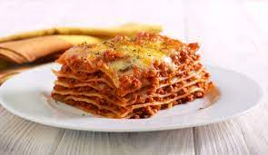

Lasagna

Description
Learn how to make this easy homemade lasagna recipe filled with tomato, meat and cheesy goodness.
Originating from Italy and dating back to the early 14th-century, lasagne (plural form of lasagna)
is a wide and flat pasta shape that is cooked and then layered with various fillings.
This classic Italian dish is great to feed a large group, perfect for potlucks and can be frozen and
reheated as leftovers. Follow along with Rachel, McCormick Food Stylist and Chef, as she makes her easy
homemade lasagna recipe for Flavor Maker. Oh, and did we mention that this recipe uses no-boil lasagna
noodles to help you save a ton of time? Check out the video to help make this tasty dish.
Ingredients
- 1/2 pound lean ground beef
- 1/2 pound Italian sausage, casing removed
- 2 jars (26 ounces each) spaghetti sauce, divided
- 2 eggs
- 2 containers (15 ounces each) ricotta cheese
- 1 package (8 ounces) shredded mozzarella cheese, (2 cups), divided
- 1 teaspoon McCormick® Garlic Powder
- 1 teaspoon McCormick® Parsley Flakes
- 1 teaspoon McCormick® Perfect Pinch® Italian Seasoning
- 1/2 teaspoon salt
- 1/4 teaspoon McCormick® Pure Ground Black Pepper
- 9 lasagna noodles, uncooked
- 1/4 cup grated Parmesan cheese
Steps
- Preheat oven to 350°F. Brown ground beef and sausage in large skillet on medium heat; stirring
occasionally. Drain fat. Stir 4 cups spaghetti sauce into meat mixture. Reserve remaining spaghetti
sauce for serving.
- Beat eggs in large bowl. Add ricotta cheese, 1 1/2 cups of the mozzarella cheese, garlic powder,
Italian seasoning, parsley, salt and pepper; mix well.
- Spread about 1 cup of the meat sauce onto the bottom of 13x9-inch baking dish; top with 3 noodles.
Spread half of the cheese mixture over the noodles. Repeat meat sauce, noodles and cheese layer once.
Top with remaining noodles and meat sauce, making sure to cover noodles with sauce. Sprinkle with
remaining 1/2 cup mozzarella cheese and Parmesan cheese. Cover with foil.
- Bake 45 minutes. Remove foil. Bake 15 minutes longer or until noodles are tender. Let stand 15 minutes
before cutting. Serve with reserved spaghetti sauce.